전기기능장 (2007-04-01 기출문제)
1과목: 임의구분
1. 변압기 절연유의 구비조건이 아닌 것은?
- 응고점이 낮을 것
- 절연 내력이 높을 것
- 점도가 클 것
- 인화점이 높을 것
(정답률: 82%)

2. 발광소자와 수광소자를 하나의 용기에 넣어 외부의 빛을 차단한 구조로 출력 측의 전기적인 조건이 입력측에 전혀 영향을 끼치지 않는 소자는?
- 포토 다이오드
- 포토 트랜지스터
- 서미스터
- 포토 커플러
(정답률: 89%)
3. 가요전선관공사에 사용되는 부품 중 전선관 상호간에 접속되는 연결구로 사용되는 부품의 명칭은?
- 스플릿 커플링
- 컴비네이션 커플링
- 컴비네이션 유니온 커플링
- 앵글 박스 커넥터
(정답률: 68%)
4. 그림과 같은 회로에서 a, b 간에 100V의 직류 전압을 가했을 때 10[Ω]의 저항에 4A의 전류가 흘렀다. 이때 저항 r1에 흐르는 전류와 저항 r2에 흐르는 전류의 비가 1:4 라고 하면 r1 및 r2의 저항값은 각각 얼마인가?
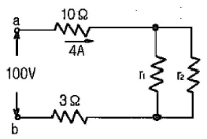
- r1=12, r2=3
- r1=36, r2=9
- r1=60, r2=15
- r1=40, r2=10
(정답률: 77%)
5. 반도체 기억소자로서 저장된 데이터는 비소멸성으로 제조 당시에 저장되어 있는 내용을 인출할 수 있으나 새로운 데이터를 저장할 수 없는 기억소자는?
- mask ROM
- S-RAM
- D-RAM
- RWM
(정답률: 44%)
6. 어떤 가정에서 220V, 100W의 전구 2개를 매일 8시간, 220V 1kW의 전열기 1대를 매일 2시간씩 사용한다고 한다. 이 집의 한 달 동안의 소비전력량은 몇 kWh인가? (단, 한달은 30일로 한다.)
- 432
- 324
- 216
- 108
(정답률: 70%)
7. 주상변압기 철심용 규소강판의 두께는 보통 몇 mm정도를 사용하는가?
- 0.01
- 0.⑤
- 0.35
- 0.85
(정답률: 91%)
8. 직류기의 전기자 철심을 규소 강판으로 성층하는 가장 큰 이유는?
- 기계손을 줄이기 위해서
- 철손을 줄이기 위해서
- 제작이 간편하기 때문에
- 가격이 싸기 때문에
(정답률: 83%)
9. 다음 그림의 스위칭 회로에서 논리식은?
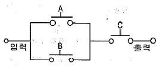
- (A+B)C
- AB+C
- AC+B
- A+BC
(정답률: 83%)
10. 다음 그림은 어떤 논리 회로인가?
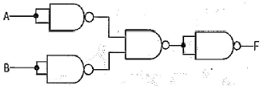
- NAND
- NOR
- E-OR
- E-NOR
(정답률: 70%)
11. 단선의 브리타니아 접속은 몇 mm 이상의 전선을 접속할 때 사용되는 방법인가?
- 1.2
- 1.6
- 2.0
- 3.2
(정답률: 58%)
12. 그림과 같은 회로에서 AB 간 전압의 실효값을 200V라고 할 때, RL 양단에서 전압의 평균값은 약 몇V인가? (단, 다이오드는 이상적인 다이오드이다.)
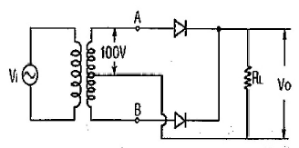
- 64
- 90
- 180
- 282
(정답률: 74%)
13. 정격출력 5kW, 회전수 1800rpm인 3상 유도전동기의 토크는 몇 Nㆍm 인가?
- 2.7
- 26.5
- 79.5
- 259.7
(정답률: 61%)
14. 리드용 2종 케이블의 약호로 옳은 것은?
- WRNCT
- WNCT
- WCT
- WRCT
(정답률: 73%)
15. 회전 전기자형 동기 발전기에서 3상 교류 기전력은 어느 부분을 통하여 출력해 내는가?
- 모선
- 전기자권선
- 회전자권선
- 슬립링
(정답률: 85%)
16. TRIAC을 사용하여 소용량 저항부하의 AC 전력제어를 하려고 한다. 게이트용 소자로 가장 간단히 사용할 수 있는 것은?
- UJT
- PUT
- DIAC
- SUS
(정답률: 85%)
17. 직류 직권전동기에서 토크 T와 회전수 N과의 관계는 어떻게 되는가?
- T∝N
- T∝N2
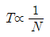
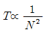
(정답률: 77%)
18. 파워 트랜지스터의 파워 스위칭 전원의 용도로 사용되지 않는 것은?
- 용접기 전원
- 고주파 전원
- UPS 전원
- 직류 안정화 전원
(정답률: 62%)
19. 스택(stack)과 관련 있는 어셈블리 명령어는?
- MOV
- ADD
- AND
- PUSH
(정답률: 44%)
20. %저항강하가 1.3%, %리액턴스 강하가 2%인 변압기가 있다. 전부하 역률 80%(뒤짐)에서의 전압변동률은 몇 %인가?
- 1.35
- 1.86
- 2.18
- 2.24
(정답률: 55%)
2과목: 임의구분
21. 8086마이크로 프로세서의 세그먼트 레지스터의 종류가 아닌 것은?
- AS
- CS
- DS
- ES
(정답률: 46%)
22. 평균 자로의 길이가 80cm인 환상 철심에 500회의 코일을 감고 여기에 4A의 전류를 흘렸을 때 자기장의 세기는 몇 AT/m인가?
- 2500
- 3500
- 4000
- 4500
(정답률: 64%)
23. SCR의 전압공급방법(Turn-On)중 가장 타당한 것은?
- 애노드에 (-)전압, 캐소드에 (+)전압, 게이트에 (+)전압을 공급한다.
- 애노드에 (-)전압, 캐소드에 (+)전압, 게이트에 (-)전압을 공급한다.
- 애노드에 (+)전압, 캐소드에 (-)전압, 게이트에 (+)전압을 공급한다.
- 애노드에 (+)전압, 캐소드에 (-)전압, 게이트에 (-)전압을 공급한다.
(정답률: 85%)
24. 반가산기 회로에서 입력을 A, B라 하고 합을 S로 표시할 때 S는 어떻게 표현되는가?
- A ∙ B
- A +B
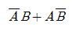
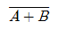
(정답률: 71%)
25. 동기 전동기에서 제동 권선의 사용 목적으로 가장 옳은 것은 어느 것인가?
- 난조 방지
- 정지시간의 단축
- 운전토크의 증가
- 과부하 내량의 증가
(정답률: 93%)
26. 변압기의 전압변동률을 작게 하려면 어떻게 해야하는가?
- 권선의 리액턴스를 작게 한다.
- 권선의 임피던스를 크게 한다.
- 권수비를 작게 한다.
- 권수비를 크게 한다.
(정답률: 69%)
27. 실리콘정류기의 동작시 최고 허용온도를 제한하는 가장 주된 이유는?
- 브레이크 오버(Break over) 전압의 저하 방지
- 브레이크 오버(Break over) 전압의 상승 방지
- 역방향 누설전류의 감소방지
- 정격 순 전류의 저하 방지
(정답률: 81%)
28. 부하 전류에 따라 속도변동이 가장 심한 전동기는?
- 타여자 전동기
- 분권 전동기
- 직권전동기
- 차동복권전동기
(정답률: 82%)
29. LIFO(Last-In-First-Out)와 관련된 것은?
- 프로그램 카운터
- 스택
- 인스트럭션 포인터
- 베이스 포인터
(정답률: 58%)
30. 다음과 같은 회로에서 저항 R이 0[Ω]인 것을 사용하면 무슨 문제가 발생하는가?
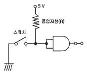
- 낮은 전압이 인가되어 문제가 없다.
- 저항 양단의 전압이 커진다.
- 저항 양단의 전압이 작아진다.
- 스위치를 ON 했을 때 회로가 단락된다.
(정답률: 94%)
31. 강자성체의 히스테리시스 루프의 면적은?
- 강자성체의 단위 체적당 필요한 에너지이다.
- 강자성체의 단위 면적당 필요한 에너지이다.
- 강자성체의 단위 길이당 필요한 에너지이다.
- 강자성체의 전체 체적의 필요한 에너지이다.
(정답률: 82%)
32. GTO를 바르게 설명한 것은?
- 게이트에 역방향 전류를 흘려서 주전류를 차단한다.
- 게이트에 순방향 전류를 흘려서 주전류를 차단한다.
- 게이트에 역방향 전류를 흘려서 주전류를 흐르게 한다.
- 게이트에 의한 제어전력이 적게 든다.
(정답률: 80%)
33. 정현파 교류의 실효값을 계산하는 식은? (단, T는 주기이다.)
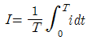
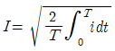
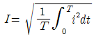
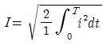
(정답률: 92%)
34. 맥동전압 주파수가 전원 주파수의 6배가 되는 정류 방식은?
- 단상 전파 정류
- 단상 브리지 정류
- 3상 반파 정류
- 3상 전파 정류
(정답률: 80%)
35. 물체가 그 온도에 상응하여 방출하는 복사를 온도 복사라 한다. 이는 어떤 스펙트럼을 이루는가?
- 구형 스펙트럼
- 선 스펙트럼
- 대상 스펙트럼
- 연속 스펙트럼
(정답률: 78%)
36. 8비트 마이크로 프로세서의 레지스터에서 레지스터 쌍으로 결합하여 16비트로는 사용할 수 없는 레지스터는?
- 8C
- HL
- DE
- AF
(정답률: 49%)
37. 자기 인덕턴스 L[H]의 코일에 I[A]의 전류가 흐를때 코일에 저장되는 에너지는 몇 J인가?
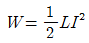
- W=2LI2
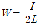
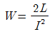
(정답률: 93%)
38. 자속밀도 1Wb/m2인 평등 자계의 방향과 수직으로 놓인 50cm의 도선을 자계와 30 ° 방향으로 40m/s의 속도로 움직일 때 도선에 유기되는 기전력은 몇 V인가?
- 5
- 10
- 20
- 40
(정답률: 70%)
39. 자극수 6, 전기자 총 도체수 400, 단중파권을 한직류 발전기가 있다. 각 자극의 자속이 0.01Wb이고, 회전 속도가 600rpm 이면 무 부하로 운전하고 있을 때의 기전력은 몇 V인가?
- 110
- 115
- 120
- 150
(정답률: 73%)
40. 교류 브리지용 전원의 주파수, 파형에 대한 구비조건이 아닌 것은?
- 주파수가 되도록 높을 것
- 파형이 정현파에 가까울 것
- 주파수가 되도록 일정할 것
- 취급이 간단할 것
(정답률: 79%)
3과목: 임의구분
41. 기숙사, 여관, 병원의 표준 부하는 몇 VA/m2로 상정 하는가?
- 10
- 20
- 30
- 40
(정답률: 70%)
42. 단상 변압기를 병렬 운전하는 경우 부하전류의 분담은 어떻게 되는가?
- 임피던스에 비례
- 리액턴스에 비례
- 임피던스에 반비례
- 리액턴스에 반비례
(정답률: 71%)
43. 3상 불평형 전압에서 역상전압 40V, 정상전압 200V, 영상전압이 20V 라고 할 때 전압의 불평형률은 얼마인가?
- 0.1
- 0.2
- 5
- 6
(정답률: 63%)
44. 전기재료의 할증에서 옥외전선은 몇 %의 할증률을 적용하는가?
- 1.5
- 2.5
- 5
- 10
(정답률: 80%)
45. 사이클로 컨버터(cycloconverter)란?
- 실리콘 양방향성 소자이다.
- 제어 정류기를 사용한 주파수 변환기이다.
- 직류 제어소자이다.
- 전류 제어 소자이다.
(정답률: 80%)
46. 몰드의 길이가 8.5m 인 금속 몰드 공사시 금속 몰드는 제 몇 종 접지공사를 하여야 하는가?
- 제 1종 접지공사
- 제 2종 접지공사
- 제 3종 접지공사
- 특별 제 3종 접지공사
(정답률: 83%)
47. 다음 중 전력용 케이블의 손실과 거리가 가장 먼 것은?
- 철손
- 저항손
- 유전체손
- 차폐손
(정답률: 66%)
48. 폭연성 분진이 있는 곳의 금속관 공사이다. 박스 기타의 부속품 및 풀박스 등이 쉽게 마모, 부식, 기타 손상을 일으킬 우려가 없도록 하기 위해 쓰이는 재료는?
- 새들
- 커플링
- 노멀 밴드
- 패킹
(정답률: 88%)
49. 평형 보호층 공사에 의한 저압 옥내 배선은 전로의 대지 전압 몇 V이하에서 시설해야 하는가?
- 150
- 220
- 300
- 400
(정답률: 52%)
50. 지중전선로에 사용하는 지중함을 시설할 때 고려할 사항으로 잘못된 것은?
- 차량 기타 중량물의 압력에 견디는 튼튼한 구조로 할 것
- 물기가 스며들지 않으며, 또 고인 물은 제거할 수 있는 구조일 것
- 지중함 뚜껑은 보통사람이 열수 없도록 하여 시설자만 점검 하도록 할 것
- 폭발성 가스가 침입할 우려가 있는 곳에 시설하는 최소 0.5m3 이상의 지중함에는 통풍 장치를 할 것
(정답률: 90%)
51. 바리스터(Varister)의 주된 용도는?
- 전압증폭용
- 서지전압에 대한 회로 보호용
- 출력전류 조정용
- 과전류방지 보호용
(정답률: 93%)
52. 그림과 같은 논리회로의 논리 함수는?
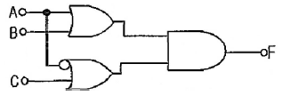
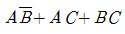
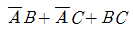
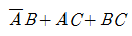
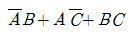
(정답률: 58%)
53. 단면적이 50cm2인 환상철심에 500AT/m의 자장을 가할 때 전 자속은 몇 Wb인가? (단, 진공 중의 투자율은 4π×10-7[H/m]이고, 철심의 비투자율은 800이다.)
- 16π×10-2
- 8π×10-4
- 4π×10-4
- 2π×10-2
(정답률: 70%)
54. 다음 중 모선의 종류가 아닌 것은?
- 단일 모선
- 2중 모선
- 3층 모선
- 환상 모선
(정답률: 74%)
55. 작업자가 장소를 이동하면서 작업을 수행하는 경우에 그 과정을 가공, 검사, 운반, 저장 등의 기호를 사용하여 분석하는 것을 무엇이라 하는가?
- 작업자 연합작업분석
- 작업자 동작분석
- 작업자 미세분석
- 작업자 공정분석
(정답률: 87%)
56. 그림과 같은 계획공정도(Network)에서 주공정으로 옳은 것은?(단, 화살표 밑의 숫자는 활동시간[단위:주]을 나타낸다.)
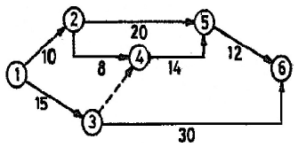
- ①-②-⑤-⑥
- ①-②-④-⑤-⑥
- ①-③-④-⑤-⑥
- ①-③-⑥
(정답률: 90%)
57. u 관리도의 관리상한선과 관리하한선을 구하는 식으로 옳은 것은?
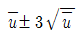
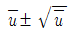
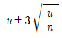
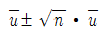
(정답률: 88%)
58. 모집단을 몇 개의 층으로 나누고 각 층으로부터 각 각 랜덤하게 시료를 뽑는 샘플링 방법은?
- 층별 샘플링
- 2단계 샘플링
- 계통 샘플링
- 단순 샘플링
(정답률: 90%)
59. 다음 중 관리의 사이클을 가장 올바르게 표시한 것은? (단, A:조처, C:검토, D:실행, P:계획)
- P→C→A→D
- P→A→C→D
- A→S→C→P
- P→D→C→A
(정답률: 87%)
60. 다음 중 절차계획에서 다루어지는 주요한 내용으로 가장 관계가 먼 것은?
- 각 작업의 소요시간
- 각 작업의 실시 순서
- 각 직업에 필요한 기계와 공구
- 각 작업의 부하와 능력의 조정
(정답률: 74%)